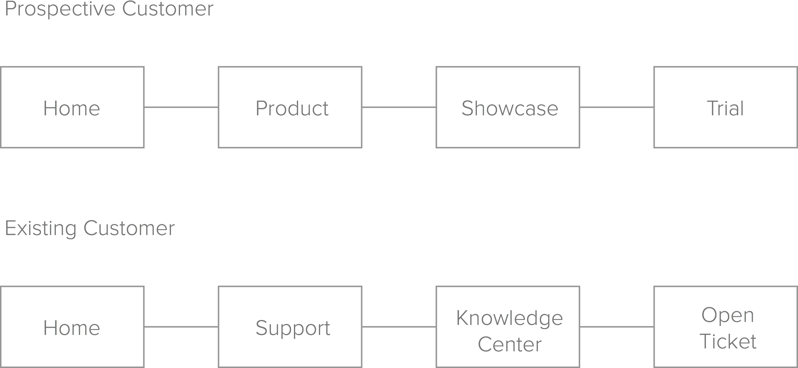

Ubi Website Redesign
Overhauling Ubi’s website to increase conversion
My Team & Role
I was the UI/UX designer on this team but also assisted the Product Manager with strategy and Web Developer with building the site. On the design side, I was responsible for establishing personas, creating wireframes, user flows, leading user testing, and creating clickable mockups.
User Research
Using the personas I created through customer interviews, I made a list of problems that currently existed with the current website based on the persona requirements. Here are the highlights:
1. People didn’t understand what Ubi was and it’s value proposition. There was a lot of missing product information.
2. The language was too sophisticated for teachers but not detailed enough for technical people.
3. Poor visual design gave the impression that Ubi’s technology was not up to par.
User Flows
Wireframes
The new homepage design featured a full screen video that showcased Ubi in action with a text overlay to communicate Ubi’s value proposition. It also provided relevant info for each of Ubi’s three main personas.
Mockups
After wireframing, I moved the designs into a medium-fidelity, clickable mock using Adobe Fireworks. The color palette featured Ubi’s core brand colors and Raleway was chosen to match Ubi’s playful, yet simple technocolgy.

User Testing
I designed a study that would teach us about the website's navigation, aesthetic, and clarity. After the study, we concluded:
1. Users understood the value prop of Ubi but not how the hardware components worked with the software, so an explanation graphic was added in the product page.
2. The pricing table was still confusing to people, so the table was restructured.
3. The new visual design changed people’s perception of Ubi’s technology in a positive way.